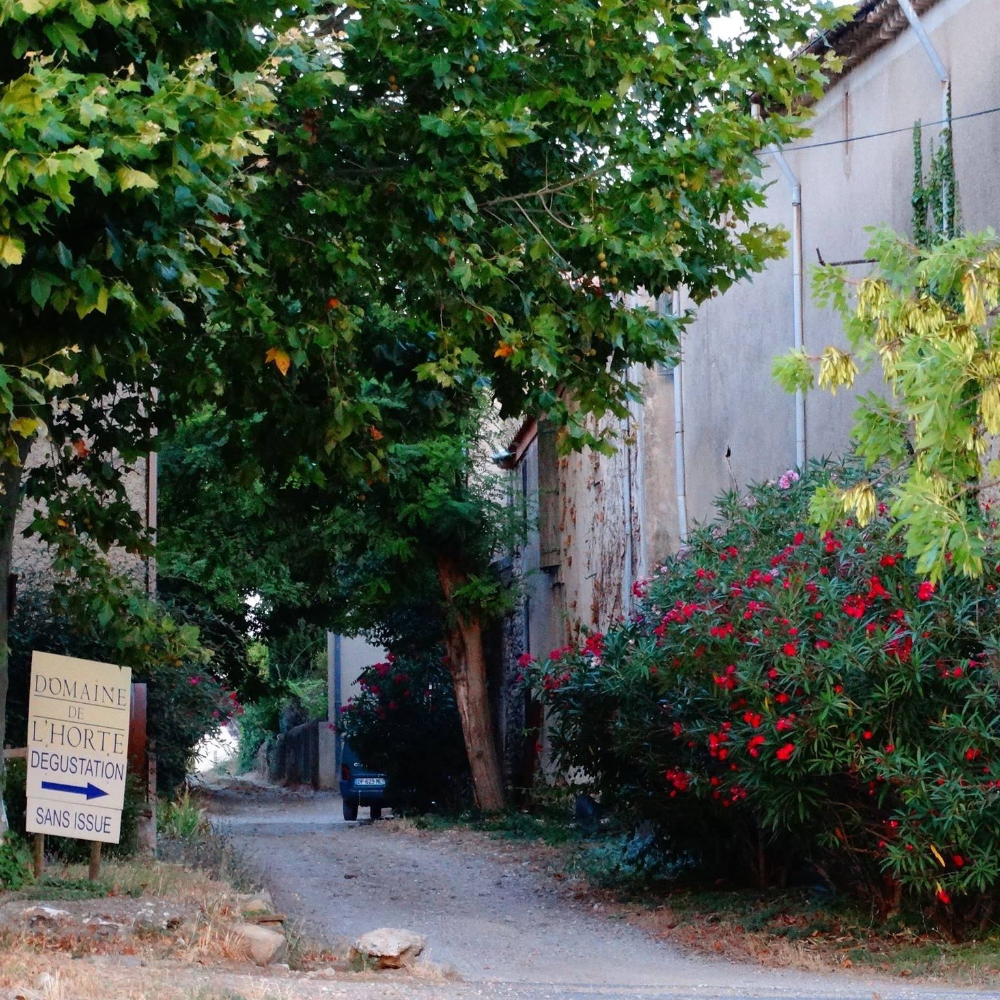

乐特酒庄
酒庄简介：
酒庄乐特酒庄的葡萄种植和葡萄酒酿造始于1755年，至今超过206年，由圣菲利克斯侯爵在科比尔的蒙特伯恩小镇（位于纳博讷与卡尔卡松小城之间）边创建的。
1989年，比亚德夫妇二人修建了一个新的酒窖，并且其1990年第一个年份酒就在《罗伯特帕克葡萄酒倡议者》杂质上取得高评分，同时还赢得法国农业部大奖赛金奖，新加坡葡萄酒大赛金奖及加拿大世界葡萄酒大赛金奖）乐特酒庄一直以有机方式栽种25公顷的葡萄园（部分树龄已逾100年），并获取欧盟认证，是科比尔产区的优质酒庄。
